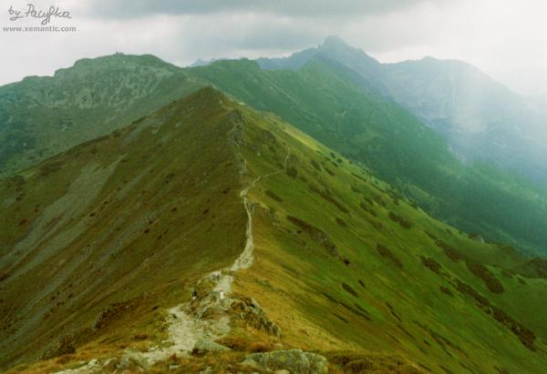

| "...gładkich
uboczy olbrzymie pustynie, okryte przez pożółkłozłotej trawy plusze..." Zbocza Doliny Wierchcichej, po lewej Kasprowy Wierch fot. Pacyfka |
 |
| Piotr Budzyna
(ur. 1965)
* * * Wieczór
osiada nad łagodnymi kopami Tatr Zachodnich. Rześkie
powietrze przepełnione jest zapachem budzących się do życia traw i
ziół. Wokół nastała cisza. Ludzie zeszli już dawno z Długiego Upłazu w
doliny. Tylko szczyty głaskane są ostatnimi promieniami zachodzącego
słońca. Łagodna, dość wyniosła kopa Wołowca stoi dumna z tego, że
spoczywają na niej ciepłe dłonie zachodzącego słońca.
Gdzieniegdzie białe języki śniegu gładzą i chłodzą jego północne
zbocza.
|
Wołowiec, fot Piotr Budzyna kongresonkol.io.gliwice.pl/piotr/ |